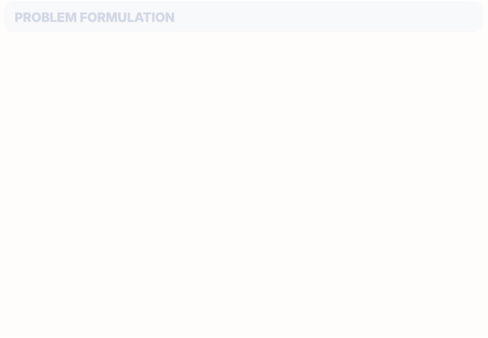

Shaping the Document, Not the Model: Optimized Suffixes for Context Following
A 20-token suffix appended to a passage makes the model answer from it on nearly all items it resisted, with the model unchanged.
I am studying how to control language model behaviour in utilizing context.
As language models become more capable, it matters more that we can understand and correct their behaviour so that it stays aligned with human values. This is what draws me to alignment, which I work on with a focus on AI safety in Prof. Timothy Baldwin's group at MBZUAI. I am curious how certain behaviours are represented in a model's latent space, and whether mechanistic control and causal representation learning can give us reliable handles on them.
A 20-token suffix appended to a passage makes the model answer from it on nearly all items it resisted, with the model unchanged.

Human-annotated moments where emotions, decisions or perspectives shift in a conversation, with timestamps and visual-textual evidence.
I am open to collaborations, so please feel free to reach out by email. I am especially interested in urgent problems at the frontier of the field.
I take my time with a problem. I spend most of my effort getting the question right before building anything, then work toward the answer one step at a time. I am a bit obsessive about the details, and I always try to leave my work neat, efficient and minimal.
Outside research, I love walking in nature, travelling, and soccer. My favorite player is Toni Kroos, who showed me that world-class simplicity is an art, in football and in life.
Updated October 2026